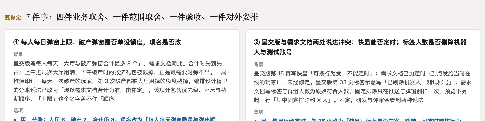
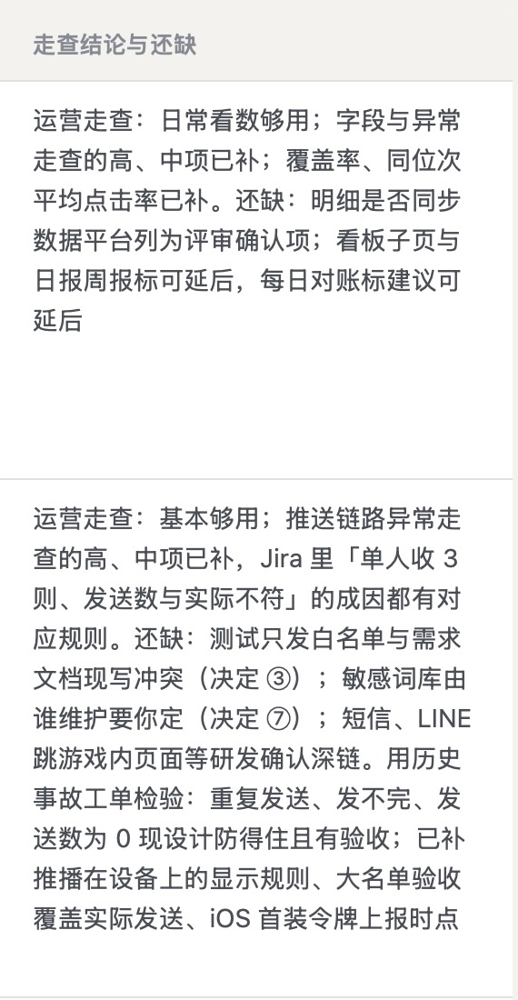
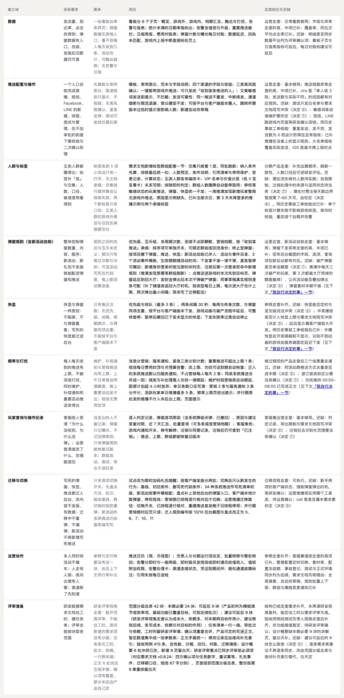
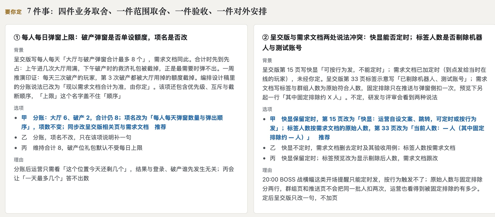
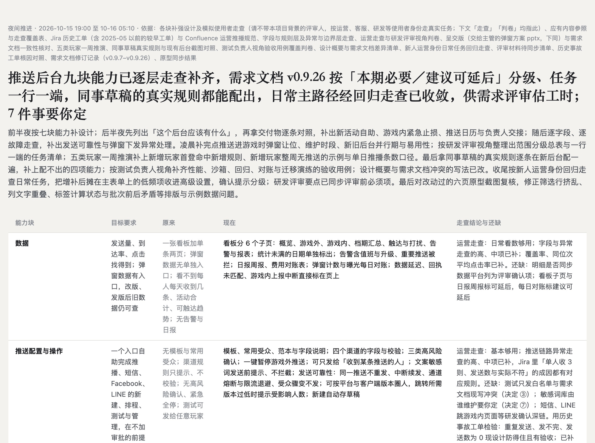
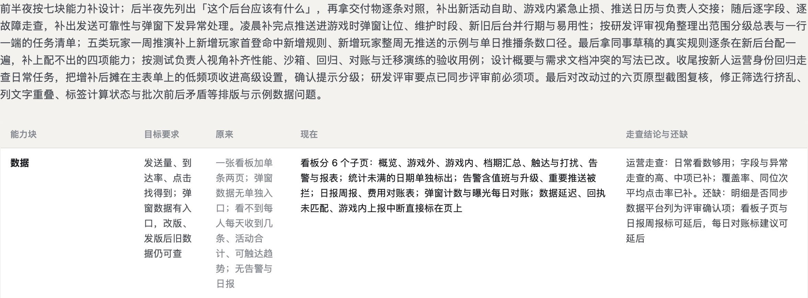
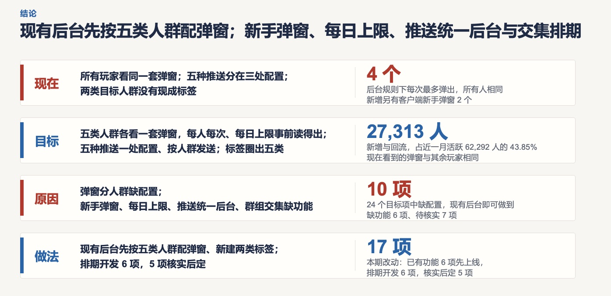

已判 0 / 13 条 · 判完了
弹窗标签推送系统 · 2026-10-16 · 第 10 份产出 · 判断题
第 10 份｜夜间简报的第一屏，读完能不能说清夜里做成了什么、还缺什么、要你定什么？
按下面 13 条标准逐条看 AI 评审的结论（每条只答「符合」或「不符合」），你只判同意或不同意；也可补标准里缺的条目。
「第一屏」＝简报《2026-10-16 夜间推进》页首到「要你定」一节之前：说明行、标题、总述段、能力块表（10 行）。在 1440 宽的屏幕上，第一屏只露出到表格第 2 行。
01判断标准：6 条，前 4 条看三问答没答清，后 2 条看读起来费不费力
结论先行与分组标题是一句中心结论
1标题是一句统领全篇的中心结论，只读这一句就能说出夜里做成的最主要结果，而不是把几项结果并列成一长句
对象 页首大标题|出处 汇报格式「标题就是结论」「结论先行、以上统下」；写作标准「结论比单条事实高一个层面：不罗列、不铺垫、不写做了什么」；业内做法：金字塔原理、BLUF
业内公认写法怎么做
- 金字塔原理（Minto）：想法最终组成一个金字塔，由「单一思想」统领；表达时带读者从塔顶往下读 Minto 官网
- BLUF 结论先行（美军写作惯例，HBR 2016 文章）：开头一句短而直接，写清目的和要对方做什么，答出何人、何事、何时、何地、为何；背景放后面、写成短条目 文章全文
我们简报对应的部分
简报页首大标题（96 字）
一句含五个分句：九块能力已逐层走查补齐／需求文档按「本期必要／建议可延后」分级、任务一行一端／同事草稿的真实规则都能配出／日常主路径经回归走查已收敛，供需求评审估工时／7 件事要你定。
AI 评审：否 标题96字并列五项结果加7件待定，无单一统领结论
你判：
首屏三问答全标题下分三问作答
2标题下紧跟几张要点卡（3 张以内），分别回答做成了什么、还缺什么、要你定什么，而不是按夜里时间先后叙述过程的整段文字
对象 标题下的总述段|出处 汇报格式「标题下一行副标题，再放几张要点卡（一般不超过 3 张）……不写成多段文字的结论框」「不按『背景 → 过程 → 发现 → 结论』的时间顺序讲」；你 10/10「简报的文字几乎堆在一起……这不能叫汇报」；业内做法：倒金字塔、美国联邦简明写作指南、Atlassian
业内公认写法怎么做
- 倒金字塔（Nielsen Norman Group）：最重要的信息、甚至结论放最前，读者在任何位置停下都已拿到要点；与先铺细节、最后才到结论的写法相反 NN/g 文章
- 美国联邦简明写作指南：先写目的和结论，最重要的信息放开头，背景（必要时）放到后面 digital.gov
- Atlassian（Confluence 项目状态报告模板）：「已完成」「下一步」「风险与问题」各占一栏，另标整体红、黄、绿状态 Atlassian 模板
我们简报对应的部分
要点卡：我们这里没有
标题下的总述段（399 字，一段）
各句依次以前半夜
后半夜
随后
凌晨
最后
收尾
最后
起头。
AI 评审：否 标题下无要点卡，只有399字按前半夜至收尾时序叙述的一段
你判：
措辞与指代「7 件」当场写出是哪几件
3页首写出要你定的每一件是什么（每件至少一句），不只给「7 件」这个数
对象 标题末句「7 件事要你定」与「要你定」一节|出处 汇报格式「只读第一屏，能知道结论和要 Dk 做什么吗」；写作标准「概念第一次出现就交代它是什么」（用数量指代一组内容时，在同一处写出成员）；业内做法：BLUF、美国联邦机构决策备忘录
业内公认写法怎么做
- BLUF 结论先行（HBR 2016 文章）：开头写明要对方做什么；邮件标题加关键词标出类型，如 DECISION 表示「需要你做决定」 文章全文
- 美国联邦机构决策备忘录（以印第安卫生署格式为例）：依次写事项、讨论、建议，末尾「决定」栏留「批准／不批准」和日期，供签批人逐项签 IHS 格式
我们简报对应的部分

「要你定」一节开头，在能力块表之后（1440 宽屏幕约第 4 屏）
页首只在标题末句写7 件事要你定
；7 件的内容在能力块表之后。表内「还缺」处用决定 ③
决定 ⑦
等编号指向这 7 件。
AI 评审：否 页首只写「7件事要你定」，各件内容到约第4屏才出现
你判：
事实与依据结论可靠到哪一级
4「已补齐」「够用」这类结论写明是谁判的、可靠到哪一级：模拟评审判的、我核实过的，还是真实使用者用过的
对象 能力块表「走查结论与还缺」栏、页首说明行|出处 汇报格式「说明消息来源可靠到哪一级」（子任务自称、评审通过、我已核实）；业内做法：美国情报界分析标准
业内公认写法怎么做
- 美国情报界分析标准（ICD 203）：写明判断依据的来源和方法，并描述来源的质量与可信度；把依据的信息与分析者的假设、判断分开写；主要判断要说明不确定性 ICD 203 原文
我们简报对应的部分

能力块表「走查结论与还缺」栏，前两行
结论写作运营走查：日常看数够用
运营走查：基本够用
等。页首说明行把「走查」定义为请不带本项目背景的评审人，按运营、客服、研发等使用者身份走真实任务
，没写评审人是 AI 子任务还是真人；夜间记录里这些走查由派出的子任务完成。
表末「评审准备」行：未再请研发视角复判，能否估工时以需求评审为准
。
AI 评审：否 仅说明行写「模拟使用者走查」，未写评审人是AI子任务、是否经核实
你判：
结论先行与分组并列块多时先归组
5页首并列的块不超过 5 个；超过时先归组，再在组内展开
对象 能力块表|出处 写作标准「首层和各节标题层的并列项不超过 5 条」；汇报格式「更下层超过 7 条就再分一层」；业内做法：Nielsen Norman Group
业内公认写法怎么做
- 分块（Nielsen Norman Group）：短期记忆大约记得住 7 块，也有研究认为 3–6 块；要读者记得多，就把信息归成有意义的块。项多本身不是问题，只要按有意义的方式分组 NN/g 文章
我们简报对应的部分

能力块表全表（缩小显示）
10 行（9 块能力＋评审准备），未分组；每行 5 栏：能力块、目标要求、原来、现在、走查结论与还缺。1440 宽下全表约 2,400 像素高、约 2.7 屏。
AI 评审：否 能力块表10行平铺未归组，超过5块上限
你判：
措辞与指代内部代号与工作用语
6页首没有需要你另查才懂的内部代号和工作用语（版本号、决定编号、自定的方法名）
对象 页首说明行、标题、能力块表|出处 汇报格式「不出现内部代号……每出现一个就逼他去查一次」；写作标准「内部黑话、自造概念换成能直接读懂的说法」；业内做法：美国联邦简明写作指南
业内公认写法怎么做
- 美国联邦简明写作指南：行话是「为显得专业而非为说明」的复杂用语，尽量换成日常说法；必须用的术语就地定义，不在开头或末尾集中放一大段定义 digital.gov
- 同一指南：一份文件里缩写不超过 3 个、最好 2 个，第一次出现写全称 digital.gov
我们简报对应的部分
页首说明行（355 字）
说明行先定义「走查」「判卷」「呈交版」，再列 15 项依据。标题与表中出现v0.9.26
v0.9.24
；决定编号 14 处（如决定 ③
5 处、决定 ⑦
4 处）；高、中项
一行一端
各 3 处。
AI 评审：否 含版本号、决定①–⑦（14处）、「一行一端」「高、中项」未释义
你判：
业内做法都已打开官方或原作者页面核对；BLUF 一文的 HBR 原页只显示摘要，按作者本人网站转载的全文核对。
02按评审维度补齐的标准：7 条，补上能否直接拍板、版面、该不该挂给你、多余内容、文字好读、截图放在页上、交付状态
按评审维度表补齐，每条小标写所属维度。
待定事项可直接决策每件先给关键信息，再给选项与推荐
7「要你定」一节的每件事，先用一个真实例子讲现状怎么运作，并写出已替你定了什么、每个选项落地后会改变什么，再给封闭选项、我方推荐和一句理由
看哪里 「要你定」一节 7 张卡|出处 汇报格式「关键信息：现状怎么运作，用一个真实例子走一遍……已经替 Dk 定了什么；每个选项落地后实际会改变什么」「推荐：必须有」；你 10/16：「我信息不全无法做出决策，你也没给我提供相关的关键信息」
业内公认写法怎么做
- 美国联邦机构决策备忘录（以印第安卫生署格式为例）：依次写事项、讨论、建议，末尾「决定」栏留「批准／不批准」和日期，供签批人逐项签 IHS 格式
- 汇报格式对每件的要求：先给关键信息——现状怎么运作（用一个真实例子走一遍）、原话证据、已经替你定了什么、每个选项落地后实际会改变什么；再写背景（为什么现在定、不定会怎样）、封闭选项、推荐（必须有）和理由
我们简报对应的部分
- 每张卡的栏目 背景、选项、理由三栏；7 件都标「推荐」，都在甲；7 件都有理由栏
- 背景里讲现状的例子 ①「每天三次破产的玩家，第 3 次破产都被大厅用掉的额度截掉」（一周推演）；③「同一活动用推播、LINE、短信各发一条时，同一人 20:00 收到几条相同内容」；④ 按 9/16 数据，注册 60 天以上的不付费玩家约 13,938 名；②⑤⑥⑦ 的背景写两份文档的现写与冲突、待取舍的范围或改动清单
- 已替你定的 ① 编排设计稿已改为「现以需求文档合计为准，由你定」；④ 需求文档「暂按注册第 7–60 天写」；⑤ 需求文档「没有自行砍，在范围分级总表里标『建议可延后』」；⑦「法务答复前，退订按『全部退订』处理，敏感词只做发送前提示、不拦截」；②③⑥ 没有单独写
- 每个选项落地后的变化 选项写的是做法，如 ① 甲「同步改呈交版相关页与需求文档」、② 甲给出改后的原句；写在理由栏的后果有 ①「丙会让『一天最多几个』答不出数」、③「不改的话……开发后返工更大」、⑤「先砍掉的块评审时就看不到」；没有按选项逐个列出

「要你定」一节 · 第 ①、② 件
AI 评审：否 卡片只有背景、选项、理由三栏，缺真实例子、已替你定和各选项落地后的变化
你判：
版面成段文字与块间距
8页首用要点卡、短条目和短表呈现，没有成段的文字，块与块之间留出明显间距
看哪里 页首标题下到「要你定」一节之前|出处 汇报格式「版面：汇报不是文章」（你 10/10：「简报的文字几乎堆在一起，毫无结构性」）；业内做法：NN/g 视觉设计原则、Ant Design 设计原则
业内公认写法怎么做
- NN/g 视觉设计原则·视觉层级：用大小、颜色、间距的差别引导读者先看什么、后看什么 NN/g 文章
- Ant Design·亲密性：关联越高距离越近，关联低的拉开；纵向间距按 8／16／24 三档或 8 的倍数 Ant Design
- 汇报格式：不写成段落，每块先放一句结论，再放数字或短条目；表格格子写短，一格一件事；节与节之间留大间距
我们简报对应的部分
检查点与实测（1440 宽，单位：像素）：
- 说明行 一段，355 字，高 80
- 标题 一句，96 字，3 行
- 标题下 一段总述，399 字，高 150；没有要点卡
- 能力块表 10 行 × 5 栏；50 格中 19 格超过 80 字，最长一格 345 字；全表高 2,408
- 块间距 说明行到标题 10，标题到总述 8，总述到表 24，表到「要你定」标题 56
能力块表全表（缩小显示）

夜间简报 · 1440 宽第一屏
AI 评审：否 页首有两段三四百字的成段文字，无要点卡，表格单格最长 345 字
你判：
方向一致挂给你的只有三类事
9页首挂给你定的事只有业务方向取舍、验收和只有你能对外安排的事三类，我方流程和内容取舍没有挂给你
看哪里 页首「要你定」相关句与能力块表|出处 汇报格式「要 Dk 定的事只有三类」（你 10/14：「这些问题根本就不需要我回答，根本是可以自行解决的」）
依据的标准怎么写
- 汇报格式：要你定的事只有三类，业务方向取舍、验收、只有你能对外安排的事；我方流程、我自己的内容取舍、材料怎么准备，自己定，不挂给你
- 你 10/14：「这些问题根本就不需要我回答，根本是可以自行解决的」
我们简报对应的部分
「要你定」一节标题自分为四件业务取舍、一件范围取舍、一件验收、一件对外安排
。7 件的题目：
- ① 每人每日弹窗上限：破产弹窗是否单设额度，项名是否改
- ② 呈交版与需求文档两处说法冲突：快显能否定时；标签人数是否剔除机器人与测试账号
- ③ 与需求文档现写冲突的规则怎么改；同活动去重是否进本期
- ④ 潜在付费的注册天数边界
- ⑤ 本期范围：建议可延后的 9 块怎么取舍；call 客是否纳入本需求
- ⑥ 验收需求文档、原型与呈交版第 15、16、30 页
- ⑦ 安排法务：确认退订与注销范围、需抑制推送的玩家状态，决定敏感词库由谁维护
AI 评审：否 除范围、验收、法务等外，还挂了测试白名单、导出限制、项名等我方内容细节
你判：
无多余内容内部记录与阅读说明
10页首没有轮数、改了几处、更正史这类内部记录，也没有读法、阅读时间这类说明
看哪里 页首说明行、标题、能力块表|出处 汇报格式「不写内部记录：轮数、更正史」；写作标准「不承载内容的说明性信息，如阅读时间」
依据的标准怎么写
- 汇报格式：不写内部记录，如轮数、更正史、内部讨论；交出去之前自查「有没有混进内部记录（轮数、更正史、『已改 N 处』）」
- 写作标准：删去不承载内容的说明性信息，如阅读时间（你：「约 2 分钟这种无效信息给我删干净啊」）
我们简报对应的部分
页首里与版本、处数、修正、用语说明有关的原文：
- 说明行 「下文「走查」「判卷」均指此」；「需求文档修订记录（v0.9.7–v0.9.26）」
- 标题 「需求文档 v0.9.26」
- 总述段 「最后对改动过的六页原型截图复核，修正筛选行挤乱、列文字重叠……」
- 能力块表 「设计概要 6 处冲突已改」；「对应需求文档 v0.9.24」；「原来」栏「正文 6 处说法互相矛盾」
- 轮数、阅读时间 页首没有
页首说明行
AI 评审：否 表中写「设计概要 6 处冲突已改」，总述记修正过程，说明行列修订版本区间
你判：
版面文字本身好读
11页首正文不小于约 12pt，灰色说明字在白底上一眼读得清（参考对比度不低于 4.5:1），行距宽松，正文栏没有收窄
看哪里 页首说明行、标题、总述段、能力块表|出处 写作标准「观感是过关条件」「正文约 12pt，不用 10pt」「正文栏不收窄」；你 10/16：「我咋感觉还是读的很费劲？是不是字体格式什么的问题？」；业内做法：WCAG 2.1
业内公认写法怎么做
- WCAG 2.1 成功准则 1.4.3「对比度（最低）」：正文文字与背景的对比度至少 4.5:1；大字（18pt 以上，或 14pt 以上粗体）至少 3:1 W3C 文档
- 写作标准：观感是过关条件，读者看得费劲即不通过；正文约 12pt，不用 10pt；正文栏不收窄；版面按电脑宽屏判断
我们简报对应的部分
实测（1440 宽，单位：像素；12pt＝16 像素）：
- 说明行 字号 12.5（约 9.4pt）；灰字 #868b92，底色 #f3f2ef，对比度 3.06:1
- 标题 字号 28
- 总述段 字号 16（12pt）；深灰 #4a4f56，底色 #f3f2ef，对比度 7.37:1；行高 1.6 倍
- 能力块表 正文字号 14（10.5pt），行高 1.6 倍；表头字号 13，灰字 #868b92 在 #f3f2ef 上，对比度 3.06:1；「原来」一栏灰字 #868b92 在白底上，对比度 3.43:1
- 正文栏 页面最宽 1,240，正文宽 1,176；表格五栏宽 196、105、123、474、278

夜间简报 · 1440 宽原样：总述段与能力块表第 1 行
AI 评审：否 说明行与表格字小于 12pt，灰字对比度约 3:1，低于 4.5:1
你判：
待定事项可直接决策要你判断的界面和页面放在页上
12页首要你判断或验收的界面、页面或表，截图或表本身就在简报页上（裁到要问的部分或框出位置），不只给链接
看哪里 页首标题末句与能力块表引用的决定；「要你定」一节|出处 汇报格式「要 Dk 判断界面、页面或表格时，把截图或表本身放在页面上」；你 10/16：「没图吗？全是纯文字？」
依据的标准怎么写
- 汇报格式：要你判断界面、页面或表格时，把截图或表本身放在页面上，链接只用来给全文；整页截图裁到要问的部分，或用框标出位置
- 你 10/16（看只有文字和链接的判断页）：「没图吗？全是纯文字？这符合写作标准吗？」
我们简报对应的部分
- 页首点到要你判断或验收的 标题末句「7 件事要你定」；能力块表「还缺」处引用决定 ①–⑤、⑦。其中 ⑥ 验收需求文档、原型与呈交版第 15、16、30 页；② 比对呈交版第 15、33 页与需求文档两处说法
- 整份简报的图片 0 张
- ⑥ 的背景 用文字列出改动：「原型新增推送日历、负责人与长期运行项、模板、数据子页、活动与事件目录……」；「第 30 页破产礼包由『第 3 个 → 第 1 个』改为『第 3 个 → 第 2 个』」
- 链接 页首的 3 处链接都指向本页「我自行决定的事」一节；「要你定」一节没有链接
- 页首的表 能力块表（10 行）本身在页上
AI 评审：否 全页无截图，要验收的原型和交主管方案页面只用文字描述
你判：
方向一致交付状态最多到待你验收
13页首写到的每份交付物状态最多到「待 Dk 验收」，没有「可交主管」「可原样转发」「可以上线」
看哪里 页首标题、总述段、能力块表「走查结论与还缺」一栏|出处 你定的（9/30 验收规则）：交付状态最多写到「待 Dk 验收」；汇报格式「Dk 验收是唯一出口」
依据的标准怎么写
- 你定的（9/30 验收规则）：交付状态最多写到「待 Dk 验收」，不写「可交主管」「可以上线」「可原样转发」
- 汇报格式：不写「可以直接交」「可原样转发」「可以上线」；你验收是唯一出口，给不给别人由你决定
我们简报对应的部分
页首写到交付物状态的原文：
- 标题 「推送后台九块能力已逐层走查补齐，需求文档……按『本期必要／建议可延后』分级、任务一行一端，同事草稿的真实规则都能配出，日常主路径经回归走查已收敛，供需求评审估工时」
- 能力块表「人群与标签」 「补完运算顺序、刷新一致性、人数口径后可进研发评估」
- 能力块表「迁移与切换」 「迁移流程走查：可执行」
- 能力块表「评审准备」 「结构已按走查要求补齐，未再请研发视角复判，能否估工时以需求评审为准」
- 「待 Dk 验收」字样 页首没有；验收作为待定事项列在「要你定」⑥
- 「可交主管」「可原样转发」「可以上线」 页首没有
AI 评审：否 标题写需求文档「供需求评审估工时」、表里写「可进研发评估」，超出待验收
你判：
补齐部分的业内做法均取自已核对的官方页面；简报的字数、高度、间距在 1440 宽下实测。
03参考案例：你推翻过的两份同类稿
例 1 看不出这一页要你记住什么
- 你的原话
- 「我看到第二页就看不下去了……数字和结论的意义我看不到，而且这个四结构明显可以用好得多的方式展示，而不是像表格一样平铺」（10/10）
- 当时的稿
- 给主管的方案演示稿第 2 页：「现在／目标／原因／做法」四行平铺，右侧各配一个放大数字（下图）
- 改后
- 先比较 2–3 种展示形式再选；有先后、因果的内容改用图表达；只留能直接说明标题结论的数字

10/10 方案演示稿第 2 页（当时版本）
例 2 方案写成长文，读完要 15 分钟
- 你的原话
- 「这个全文读完大概需要多久？能不能写的让我更易读一些，很费时费力，有没有无关或不重要的内容就放到附录里。只看原型图可能都比这一整篇长文要轻松快速吧？」（10/13）
- 当时的稿
- 推送后台方案设计：正文约 5,300 字、约 15 分钟；已通过的需求复述两遍，要你判的决定与常规做法等篇幅混写，每节标题 30–40 字
- 改后
- 正文只放要你确认的设计决定（决定｜理由｜不选另一种的原因｜运营看到什么），已定的事一行带过；对照表、规则明细折叠进附录；正文约 5 分钟
04怎么判
直接在页面上点：每条下面点「同意」或「不同意」（不同意可写一句理由），页面最下面可补还缺的标准；点完自动保存，判完在对话里说一声「判完了」即可。
05还缺什么，判完没有
原文：简报 · 夜间推进 请你判的 10 份产出